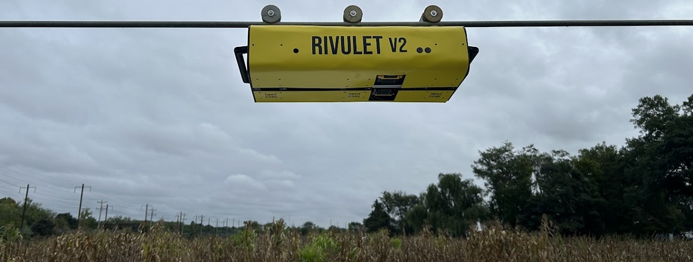

RIVULET - Senior Design / Extended Research Project
Above is a picture of the most recent edition of the RIVULET, which stands for "Rover for Irrigation and Vegetation Understanding, Learning, and Environmental Tracking; additionally, the word 'rivulet' is also defined as "a very small stream". This robot, originally devised as a senior design project at UD, is intended to be used by farmers/researchers (specifically Dr. Yin Bao, the sponsor of this project) to monitor soil moisture and keep track of plant phenotype. Compared to a field drone, which in some cases are used to achieve similar results, this robot achieves locomotion by riding along the long trusses of a linear move irrigation system, which connect different sections together. Some advantages of this method are a longer battery life, the ability to collect higher precision measurements, and eliminating downwash that drones create from their propellers spinning over crops in the field, which can make image collection impossible due to the crops moving.
The main challenge of developing this robot was avoiding the "truss pockets" - these are the joints that connect multiple truss rods together. My senior design team and I developed a method of traversing past these by having multiple drive wheels connected to independent arms, and when a truss pocket is approached, the arm that's movement is impacted by the truss pocket will lift the wheel out of the way, and the robot is free to continue moving forward. It continues this sequence until the pocket has been avoided by each wheel, and then it continues with normal operation. My personal contribution has been helping with manufacturing and design tweaks for mechanical components, researching, and ordering, and assembling the electronics, and programming the robot to perform its actions.
RIVULET V1
 The original version has three arms, each independently
controlled with a linear actuator and their own drive wheel. Each motor (6 total) has their own
motor driver, which we chose the
BTS7960. Additionally, we use a counterweight that will shift the CoG depending on which arm lifts
up, which is belt driven by a
stepper motor with a TB6600 driver, and a limit switch to home the load. 2 4S lithium ion batteries
power the system, each with an independent
capacity of 8 Ah; these were connected in parallel to allow for longer run time. Finally, all of the
control is driven using an Adafruit Feather
with a built in LoRa module built in. To communicate between the robot and the controller, we
created a custom controller that also uses an
Adafruit Feather, which has a similar look to a classic Nintendo controller.
The original version has three arms, each independently
controlled with a linear actuator and their own drive wheel. Each motor (6 total) has their own
motor driver, which we chose the
BTS7960. Additionally, we use a counterweight that will shift the CoG depending on which arm lifts
up, which is belt driven by a
stepper motor with a TB6600 driver, and a limit switch to home the load. 2 4S lithium ion batteries
power the system, each with an independent
capacity of 8 Ah; these were connected in parallel to allow for longer run time. Finally, all of the
control is driven using an Adafruit Feather
with a built in LoRa module built in. To communicate between the robot and the controller, we
created a custom controller that also uses an
Adafruit Feather, which has a similar look to a classic Nintendo controller.
My role as the electronics and programming team member was to test each component for functionality, install them onto our robot, and create a custom communication protocol between the robot and controller using different bytes in the signal to represent information. Through this, I expanded upon my proficiency in C++ by learning how to do class-based object oriented coding. That code can be found here on my GitHub page. Essentially, I created objects for each component (i.e. the drive motor, the actuator, the active balancing, etc.) and separated them into their own "controller" objects, which take in the different components with the understanding of their placement. Therefore, it was easier to maintain the same control between different arms even if something changed on the lower level control. Using the RH_RF95 library, I created a data buffer that had three bytes of data, which encode data relating to the direction, speed, and location which arm should move.
Early on, I messed around with the communication in different ways. Because keeping serial prints would introduce a lot of unnecessary lag into the system, I tested the communication method between the two using push buttons on a controller and LEDs on a receiver.
After bug fixing the issues from the communication, I landed on a successful method. Next, we tested that same communication scheme with the motors, and we added a third button to drive all three motors simultaneously. With this, we confirmed that we can implement independent control, which will be handy for moving the arms, as well as simultaneous control for the drive wheels.
Now that the proof of concept had been tested out, I was able to move into making the electronics more tidy and concise, with mounts to fit them into the frame of our robot. At this time, I also helped the other members of my team by laser cutting the arms and any other spacers out that we needed in the UD FabLab.
Eventually, we ordered all of our parts from SendCutSend and were able to assemble the frame and all of the electronics. With some final testing and adding the dynamic balancer, I was able to create an initial setup routine and specialized moves for each arm to raise and lower, while placing the balance weight accordingly. The video below shows this process at 2.5x speed.
My group presented this at UD's annual design showcase, where all seniors present their senior design projects. We created a frame that was representative of the truss rod that the robot would have to travel along during normal operation, and we also were able to bring it to a farm site on campus and put it on to run it. In the end, this design ended up proving to be a great validation of the idea, and a partner and I were offered by Dr. Bao to work on this project again in the coming semester to make some general improvements based on these initial results.
RIVULET V2
During the next semester, my teammate and I decided that it would be best to restart the robot from scratch, taking the lessons learned and the new understanding of both the scope and the problem to make better informed decisions for the design. The major design constraints revolved around reducing the total weight of the robot (which meant finding a different method for self-stabilization), changing the type of battery power, updating the electronics with custom PCB boards, and reducing the size all while introducing a sleek new look.
In order to start, we needed to think about what worked well and what didn't. One major feature that we intentionally thought of for the previous version was using V-groove wheels; this would allow the robot to dynamically compensate for the rod if the placement was off, simply sliding back into place. We wanted to keep that same design, but try to optimize the size of the wheel, meaning we we're going to have to create something custom. The approach that we decided on was creating a 3D model of the wheel, casting a negative mold in silicone, and then creating a final positive mold of the wheel with a central machined hub being trapped inside of the new wheel. This is to ensure that the drive shaft can have a metal interface to interact with rather than some resin and to make the removal process super simple with the silicone negative. Basically, we're using the precise tolerances and strength of the machined hub while decreasing weight and cost, as well as adding the durometer of resin for grip.
The way in which my partner and I approached this was to create a housing to pour silicone in, as well as a lid with openings to get silicone into the housing and keep the 3D printed wheel from floating out of the silicone. You can see the housing on the left and the "spider" on the right, which click into place. This allows us to leave the silicone/resin to cure overnight while making sure that everything stays where it needs to be. After some research on the web, the best manufacturing method for smoothness was to put the resin into a pressure pot to release any air bubbles from the material. After a few trials to nail down the process, we ended up with 3 custom wheels with trapped inner hubs.
Another feature that we knew didn't work well in our new design was the counterweight system. To combat this problem, we created a new arm model that had an "up-stop wheel". This wheel supports the robot from the underneath, and it is actuated via a timing belt with custom 3d printed timing pulleys. With that, we can precisely control the amount of relative rotation that the up-stop wheel should have in comparison to the drive wheel. This wheel will similarly have an insert into its core, but this will be a stock part that can be press fit in rather than trapping the hardware inside the resin.
I was in charge of developing a PCB for a new controller board, the Adafruit Feather M4 with CAN Bus already incorporated. We shifted to this new controller board for two reasons - for one, the controller is planned on receiving commands from the Nvidia Jetson housed inside and will no longer need the communication via LoRa. Secondly, the new motors that were purchased to drive each of the wheels are all based around CAN, so we wanted an easy interface with that communication layer. This PCB contained a myriad of connectors which were mainly JST connectors for the CAN line to each motor, the linear actuator drivers, and different sensors that we had on board. Additionally, in order to future-proof the system and make it modular, any available pins were broken out and connected to a 5V-3.3V logic level shifter, ensuring that 5V and/or 3.3V sensors may be used in the future. In order to activate the level shifter for any specific node, you could user jumper headers to switch the connection. You can see this circuit board below.
Finally, we wanted the battery system to be quickly and easily swappable. Although we could have went with integrated batteries, one critical constraint was long run times. Instead of stacking loads of batteries into the system and having to develop battery charging systems into the robot, we decided to go with DeWalt batteries - if you have extra batteries, you can instead swap them just as you would with a tool when the battery runs out.
All of these improvements lead us to the final product, the Rivulet V2. We used a 2020 aluminum chassis, held together by custom HDPE plates to ensure a rigid but lightweight structure. Everything was easily mounted using the aluminum extrusions. An ABS varnish covers the outside, ensuring that the internal components are protected from sunlight and light amounts of water and debris, as well as giving it a clean look. Many folded sheet metal and Nylon 6 3D printed brackets were made to hold parts in place. Overall, this project was very satisfying to work on and helped me gain a lot of experience with all sorts of things, like programming, electronics, PCB design, resin manufacturing, and further honing my 3D printing skills.